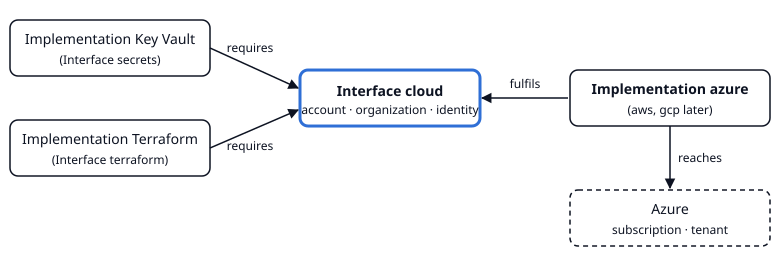
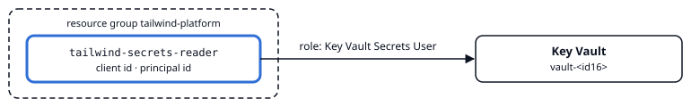
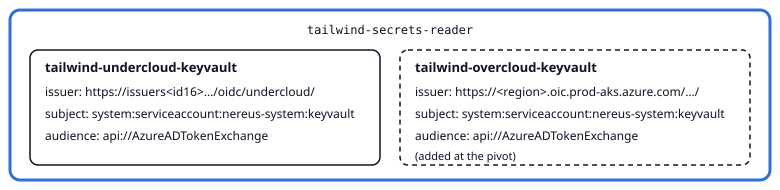
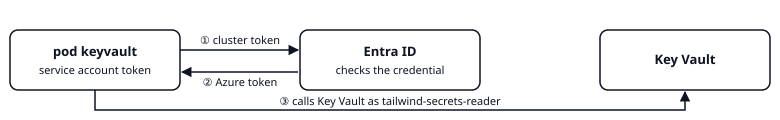
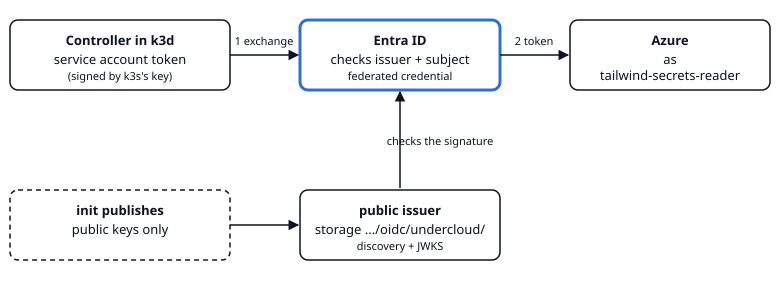
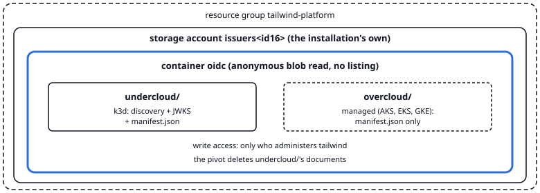
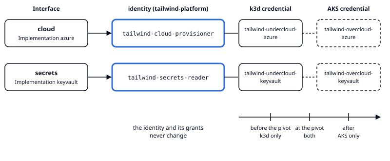
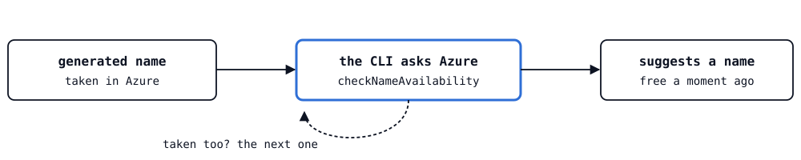
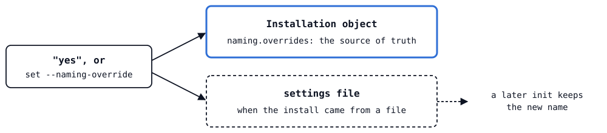

0005. Cloud reef: how the platform presents itself to a cloud¶
Status: Accepted (2026-10-19)
Intent¶
The platform reaches a person's cloud resources (the Key Vault of #81, the Terraform Stacks of #92 and #93) as identities of its own, with no credential kept anywhere: no client secret, no certificate, no copy of the person's login. This spec turns the decisions of #82 and the owner's answers on PR #151 into a design:
- The connection to a cloud is a reef,
cloud(decision 2). Each connection is an Instance, andazureis its first Nereid. Nereids that reach a cloud declarerequires: cloud, which layer 1 of spec 0003 already checks when a Nereid is added. - The platform proves who it is through workload identity federation, from the k3d undercloud too (decision 1). The cluster's service-account tokens are trusted by the cloud because the cluster's OIDC issuer is public: k3d's is published on public storage, AKS publishes its own.
- One identity per reef and per installation (answer 2): a user-assigned managed identity named
<installation>-<reef>-<role>, such astailwind-secrets-reader, wheretailwindis the installation's name (#154, spec 0006), with no platform prefix (answer 15). The identity is named after the reef, never the Nereid, so swapping the Nereid keeps the identity and its grants. It is the same identity before and after the pivot (#61). - One resource group per installation holds everything the installation creates in a subscription (answer 15):
<installation>-platform(tailwind-platform), like the addressplatform.tailwind.com. Nothing is shared between installations in a subscription. - The person's own login creates what is needed, through requests the Nereid publishes (answer 1, decision 3): the
azureNereid decides which cloud requests to make; the CLI shows each one and runs it on the person's machine with their short-livedaztoken, after the person approves it. - The undercloud is born with the
cloudreef (owner, 2026-10-19):nereus init --target azurecreates the k3d cluster with its issuer URL already computed from the installation's id, adds thecloudreef, adds theazureNereid, and that Nereid plans the bootstrap (the installation's resource group, the issuer storage, the person's grant on it, the issuer documents) that the person approves and the CLI runs with theirazlogin, through the same request protocol. Publishing a cluster's issuer is how the platform presents itself to a cloud, so it belongs to thecloudreef's contract, not to a separate reef, and the CLI holds no Azure call of its own. - The first overcloud is AKS (owner's condition on decision 1): the first choice, for the owner's experience with Azure and because AKS provisioned faster than EKS when this spec was written (October 2026); EKS, GKE and other managed Kubernetes follow, each with its
cloudNereid. The k3d federation is the undercloud's stage of the same mechanism, which the overcloud keeps after the pivot. - Every cloud resource created as the platform says which installation created it and who asked (the requester-tags requirement on #82, the contract of #155).
Not the authentication of the platform's own users (ADR 0006, authentication is a reef: OIDC inwards, any protocol outwards): this is the platform authenticating outward.
The spike of #82 passed: a pod of a k3d cluster named undercloud, service account nereus-system/keyvault, read a test secret from a test vault through workload identity federation, with nothing stored. Its findings are design inputs below.
The scene that ends the slice¶
A person with an Azure login, on a laptop with Docker and k3d. It needs a cloud, so it runs by hand in the owner's sandbox subscription (test/scene-azure), not in CI (answer 6, see Walkthrough and scene).
# journey step 0: the person's own login
az login
# tailwind-undercloud with its computed issuer; adds the cloud reef, adds the azure Nereid, shows the bootstrap plan
# (tailwind-platform, issuers<id16>, the person's grant, the issuer documents, tailwind-cloud-provisioner)
nereus init \
--target azure \
--yes
nereus reef apply secrets --from-file ./reefs/secrets/
# requires cloud: shows the plan for tailwind-secrets-reader and its federated credential
nereus nereid apply keyvault --reef secrets
# every request waiting for approval, in plain words
nereus system access list
# REEF REQUEST WHAT STATE
# secrets r-01jaqb grant Key Vault Secrets User on vault-<id16> to tailwind-secrets-reader Pending
# runs them with the person's az login
nereus system access approve secrets
nereus init with no --target azure creates nereus, and nothing here changes it.
Approving in one step (owner, 2026-10-19). In the MVP the person who installs approves their own requests; handing them to someone else (a plan file, an approver role, a pull request) is #259's.
nereus system access approve --allshows one plan with every waiting request, numbered (1/3 secrets,2/3 terraform,3/3 cloud), each with its role, scope, identity and description, then asks once. A failed request does not undo the others; running it again applies only what is missing.-
An access request in a plan (owner, 2026-10-19) is one sentence, then its purpose under a
why:label, in the same words as the resource'snereus-purpose:access grant Storage Blob Data Contributor on issuers<id16> to maria@example.com why: To publish the issuer documents of the undercloud of installation tailwind.With colours on, the verb, the role, the resource and who receives it each have their own colour, and the purpose is grey; with
NO_COLORor outside a terminal, the same text. ---approve-accessonnereus initandnereus nereid applyapproves, during that run, every access request the run itself makes, after printing them in the plan, without a second question: the demo runs end to end with one command. Without it, an interactive run asks; a run that is not interactive stops before the first grant and printsnereus system access approve --all. ---dry-run(#242) on any of them prints the access requests as part of the plan and runs none.
The cloud reef¶

The neutral words, mapped before the contract is fixed¶
"Subscription" and "tenant" are Azure's words. The contract names only what every cloud has (decision 2), and this table checks the third cloud on paper before the first is built.
| Neutral word | Azure | AWS | GCP |
|---|---|---|---|
| account: where the platform acts and is billed | subscription (00000000-0000-0000-0000-000000000000) |
account (123456789012) |
project (example-project) |
| organization (optional): above the account | Entra ID tenant: always present, so the azure Nereid requires it |
organization (o-a1b2c3d4e5), optional |
organization (organizations/123456789012), optional |
| identity: who the platform presents itself as, one per reef | user-assigned managed identity, by its client id | IAM role, by its ARN | service account, by its e-mail (tailwind-secrets-reader@example-project.iam.gserviceaccount.com) |
| principal: what roles are granted to | the managed identity's principal (object) id | the role's ARN | the service account |
| trust: what accepts the cluster's tokens | a federated identity credential on the managed identity (issuer, subject, audience) | an IAM OIDC identity provider, plus the role's trust policy on sub and aud |
a workload identity pool and its OIDC provider, plus an IAM binding on the subject |
| audience the token carries | api://AzureADTokenExchange |
sts.amazonaws.com |
the provider's resource name |
| exchange: the token traded for a cloud token | Entra ID token endpoint, client assertion | STS AssumeRoleWithWebIdentity |
STS token exchange, then impersonation of the service account |
| public issuer for a local cluster | discovery document and JWKS on public blob storage | the same, on public S3 | not needed: an OIDC provider accepts an uploaded JWKS |
| grant: a role on a scope | role assignment (role definition, ARM resource id) | an IAM policy on the role, naming resource ARNs | an IAM policy binding on the resource |
| where identities live, outliving any cluster | a resource group of the installation | the account (IAM is global to it) | the project |
| resource attributes (see Requester tags) | tags | tags | labels |
| the person's login the CLI uses | az |
aws |
gcloud |
What the table shows: the subject is the same string everywhere (system:serviceaccount:<namespace>:<serviceaccount>), the issuer is the same URL, and every cloud has an identity that roles attach to and that trusts an issuer with no secret. So the contract carries the reef, the issuer and the audience; how identities, trust and grants are written stays in each Nereid.
The objects¶
Where they come from (owner, 2026-10-18; the details are #18's): the reef ships its own CRDs, never its first Nereid. nereus reef apply cloud --from-file ./reefs/cloud/ applies the version this CLI pins, and fails when the reef exists, as kubectl create does, printing the apply commands to run instead (pinned version, --image, --path); nereus reef apply cloud creates or updates, to the pinned version, or from --image <ref> (an OCI package) or --path <file or folder> (local YAML). Every command that changes something has --dry-run (#242): nereid apply azure --dry-run and access approve --dry-run show the plan's requests and run none.
ADR 0011's shape: a Mandate per Nereid, an Instance with generic parameters, and the Reef object naming the reef's default Instance.
apiVersion: core.getnereus.dev/v1alpha1
kind: Mandate
metadata:
name: azure
labels:
core.getnereus.dev/nereid: azure
core.getnereus.dev/reef: cloud
spec:
reef: cloud
nereid: azure
default: true
---
kind: Cloud
metadata:
name: default
spec:
mandate: azure
account: 00000000-0000-0000-0000-000000000000
organization: 00000000-0000-0000-0000-000000000000
issuers:
- {cluster: undercloud, url: "https://issuers<id16>.blob.core.windows.net/oidc/undercloud/"}
access:
- {reef: cloud, request: r-01jaq3}
- {reef: secrets, request: r-01jaq7}
- {reef: secrets, role: Key Vault Secrets User, scope: /subscriptions/.../vaults/vault-<id16>, request: r-01jaqb}
approved: [r-01jaq3, r-01jaq7]
status:
installation: {id: 00000000-0000-0000-0000-000000000000, name: tailwind, cluster: undercloud}
issuer: https://issuers<id16>.blob.core.windows.net/oidc/undercloud/
audience: api://AzureADTokenExchange
issuers:
- {cluster: undercloud, url: "https://issuers<id16>.blob.core.windows.net/oidc/undercloud/", state: Published, jwks: "sha256:<hex>", publishedAt: "2026-10-19T12:00:00Z"}
identities:
- {reef: cloud, name: tailwind-cloud-provisioner, identity: 00000000-0000-0000-0000-000000000000, principal: 00000000-0000-0000-0000-000000000000, state: Applied}
- {reef: secrets, name: tailwind-secrets-reader, identity: 00000000-0000-0000-0000-000000000000, principal: 00000000-0000-0000-0000-000000000000, state: Applied}
plans:
- request: r-01jaqb
reef: secrets
requests:
- {method: PUT, url: "https://management.azure.com/subscriptions/.../roleAssignments/...?api-version=...", body: {...}}
conditions:
- {type: Ready, status: "True", reason: TokenExchanged}
| Field | Writer (ADR 0005) | Meaning |
|---|---|---|
spec.mandate |
the CLI | the Mandate, so the Nereid |
spec.account |
the CLI | the account, in the cloud's own form |
spec.organization |
the CLI | the organization above it, when the cloud has one; empty otherwise |
spec.resourceGroup |
the CLI | where the installation's resources live in the account, <installation>-platform: a full name from the naming function, never one the Controller composes (#307) |
spec.issuers[] |
the CLI | the issuers the installation's clusters need published, each a cluster role (undercloud) and its URL, which init --target azure computes with the naming function before the cluster exists; no entry for a cluster whose cloud publishes its own issuer (AKS) (owner, 2026-10-19) |
spec.access[] |
the CLI | what a reef needs from the cloud: its identity, and optionally a role on a scope, each with a request id |
spec.access[].name |
the CLI | the identity's full name, <installation>-<reef>-<role>, from the naming function (#307) |
spec.access[].identity |
the CLI | an identity an admin created, adopted instead of creating one (--param identity=<id>) |
spec.approved[] |
the CLI | the request ids whose plan the person approved and the CLI ran |
status.installation |
the Controller | the installation's id and name (#154, spec 0006) and the cluster's role (undercloud, overcloud), read from the installation's object |
status.issuer |
the Controller | the issuer the cluster presents, read from the cluster's own /.well-known/openid-configuration |
status.audience |
the Controller | the audience a projected token must carry for this cloud |
status.issuers[] |
the Controller | per entry of spec.issuers[]: its state (Pending until its plan runs, Published, Stale when the cluster's JWKS differs from the published one), the digest of the JWKS published and when |
status.identities[] |
the Controller | per reef: the identity's name, its id, its principal and its state (Applied, Pending while it propagates, Refused with a reason) |
status.identities[].request, .credential |
the Controller | the request whose answers wrote the identity (or whose entry it refused before any plan), and the federated credential that trusts its reef's Nereid now; Retiring marks an identity a role word replaced, deleted by a plan of its own (#310) |
status.grants[] |
the Controller | per access entry with a role: its request, role, scope and principal, Applied or Refused with what an administrator has to run, so a run again applies only what is missing (#310) |
status.plans[] |
the Controller | per request id not yet approved: the cloud requests it needs, exactly as the CLI will run them; an access entry of another reef keeps its plan, unchanged, until its answers come back (#310) |
status.conditions |
the Controller | Ready when its own token exchange passes; Stalled (True, with a reason, a message (at most 300 characters) and the observedGeneration it was written for, and the refusal's cause (300), check (200) and fix (200) when it knows them, ADR 0012) when it refuses the Instance as it is and plans nothing until its spec changes (#318, #327) |
- Keyed by reef, never by Nereid. No Nereid's name or kind sits in the reef's objects (ADR 0002, ADR 0011). The service account a federated credential trusts is found from the Nereid added for that reef (its
Nereidobject's reef); a swap changes that, and the Controller plans the new credential. - Values in the cloud's own form are opaque to the contract.
account,organization,identity,roleandscopeare strings the reef does not parse; the Nereid validates them. A role name or a resource id is a value of the cloud, not of a Nereid. - The subject is never written: it is always
system:serviceaccount:nereus-system:<serviceaccount>, and the service account is the one the CLI creates per Nereid (cluster.workload). - One Instance,
default, per Nereid, as ADR 0011 says. Several accounts at once wait for a need. spec.issuers[]says what to publish, never what the cluster presents:status.issueris still read from the cluster, and the Controller refuses an entry for its own cluster whose URL differs from it, so the two never disagree.
What every cloud Nereid adds and validates itself¶
Azure (azure) |
AWS (later) | GCP (later) | |
|---|---|---|---|
account |
a GUID | 12 digits | a project id, ^[a-z][a-z0-9-]{4,28}[a-z0-9]$ |
organization |
required, a GUID | optional, ^o-[a-z0-9]{10,32}$ |
optional, ^organizations/[0-9]+$ |
identity (adopted) |
a managed identity's client id, in account |
a role ARN in account |
a service account e-mail in account |
| identity names | letters, digits, - and _, 3–128 characters |
64 characters | 6–30 characters: <installation>-<reef>-<role> may need shortening there |
scope of a grant |
an ARM id starting with /subscriptions/<account>/ |
an ARN in account |
a resource name in account |
role of a grant |
a role definition that exists, never Owner, User Access Administrator or Role Based Access Control Administrator |
a managed or customer policy, never AdministratorAccess or IAMFullAccess |
a role, never roles/owner or roles/resourcemanager.projectIamAdmin |
| issuer | https, publicly reachable, or not yet published when its own plan publishes it (bootstrap mode) |
the same | the JWKS read from the cluster |
The Nereid refuses an issuer that is not public (Kubernetes' default issuer, https://kubernetes.default.svc.cluster.local) with the fix: nereus init --target azure. Bootstrap mode (owner, 2026-10-19): an issuer not yet published is accepted when spec.issuers[] lists it for the Controller's own cluster, under the installation's issuer storage, because the Nereid's own plan publishes it; the Controller is Ready only once it is published and its token exchange passes. Kubernetes' default issuer can never be published, so it is refused in every mode. A refusal is final for the spec it read (#318): the Controller writes no plan, sets Ready to False and Stalled to True, both with the reason and the message, and Stalled names the Instance's metadata.generation in observedGeneration. The refusal's fields (ADR 0012, #327): the message (at most 300 characters) says what happened, naming the cluster by its role and installation (the undercloud of installation tailwind, or the cluster of installation tailwind when the role is unknown), never by its Kubernetes distribution; Stalled adds, when the Controller knows them, cause (the probable cause, at most 300 characters), check (a command that confirms it, 200) and fix (a command ready to copy, 200), which the CRD keeps. For Kubernetes' default issuer the Controller writes: message the undercloud of installation tailwind presents Kubernetes' default issuer https://kubernetes.default.svc.cluster.local, which Azure cannot reach; cause probably created by nereus init without --target azure (k3d is the default): the issuer is set when the cluster is created and never changes after; check kubectl get --raw /.well-known/openid-configuration; fix nereus init --target azure --installation-name <installation>. The CLI stops waiting for the plan as soon as it reads a Stalled for the current generation, and prints the reason, then one line per field (what, cause, check, fix) and Nothing ran in the cloud. (the closing line is the caller's, where it holds: nereid apply's plan step adds it, system access approve does not), each cleaned like any text a Nereid publishes and cut at its limit, never naming the Nereid; a refusal with only a message prints as one line, the reason and the message; a Stalled of an earlier generation says nothing about the spec the CLI just wrote. The name follows the Stalled condition of Kubernetes' kstatus.
How the Nereid acts with the person's login: the request protocol¶
Creating identities and grants needs the person's rights, which only the person's machine holds. Azure code inside the CLI would name a Nereid (ADR 0002), and sending the person's token to a pod would put a broad Entra ID token inside an image that may come from outside the catalog (#85). So the CLI is the hands and the Nereid is the brain (answer 1):
- The image declares the login it needs, in the label
<API_GROUP>/login, one of the Tools the CLI knows:az, lateraws,gcloud. The CLI keeps one fixed entry per Tool: how to get a short-lived token for each of its hosts (foraz:az account get-access-token --resource <host>, formanagement.azure.com, and with--resource https://storage.azure.com/for the blob host of the issuer storage account named inspec.issuers[], which the bootstrap publishes to;graph.microsoft.comonly if an app registration is ever needed, #234) and the current account and organization from the same answer. The label only selects an entry; no command is built from it. - The CLI writes what is asked, an access entry in
spec.accesswith a new request id, and the requester's annotations (Requester tags). - The Controller plans: it writes in
status.plansthe cloud requests the entry needs, each with its method,httpsURL and JSON body, its tags already in the body. A request may use a field of an earlier answer of the same plan, written${<n>.<json path>}(the principal id of an identity created by request 0, for a role assignment), so the whole plan is shown before anything runs. - The person approves, and the CLI runs the plan with the person's token, in order, printing each request; nothing runs without approval (answer 5). The CLI then records the request id in
spec.approvedand posts the answers to the Controller (POST /cloud/answers), which reads the result intostatus. A refused request (403) stops the plan; the Controller turns it into what an admin has to run. - What the CLI accepts in a plan:
httpsonly; the hosts of the declared Tool only; no header butContent-Type(the CLI addsAuthorization, and for a blob host the fixedx-ms-blob-typeandx-ms-versionof the Tool's entry); bodies up to 64 KiB, answers capped at 1 MiB; at most 50 requests per plan; a substitution only from an earlier answer of the same plan, only into a string, and only when the value is a short string of letters, digits,-,_,.and/; text from the Controller shown as text (ADR 0004's rule).
The token never leaves the person's machine, every change is listed before it runs, and the cloud's code lives in the Nereid's repository (cloud-azure-controller).
The azure Nereid¶
nereus nereid apply azure¶
nereus init --target azure runs it for the undercloud (see The k3d undercloud issuer); a person runs it by hand on a cluster that already exists (#77) or to pick another subscription. The image declares reef=cloud, nereid=azure, login=az. After layer 1 of spec 0003:
- The login. The CLI reads a token and the current account and organization from
az.--param account=<id>picks another subscription of the same login. - The Instance. The CLI writes the
Mandateof thecloudreef, theCloudInstancedefault(account,organization, andlocation:--param location=<region>, else the Instance's own, else the person'sazdefault,az config get defaults.location; with none, the CLI stops before writing anything, and the Controller refuses an Instance without one,Stalled, #319) and the access entry of thecloudreef itself. The Controller starts, not Ready yet, and plans: - the installation's resource group
<installation>-platform(answer 15), which holds everything the installation creates in the subscription and outlives the undercloud; the plan'sPUTis idempotent, so the same plan servesinit --target azureand an installation into a cluster that already exists (#77); - the bootstrap, when
spec.issuers[]lists an issuer not yet published (bootstrap mode): the issuer storage, the person's grant on it and the issuer documents, before the identity (see The k3d undercloud issuer); - the identity
<installation>-cloud-provisioner, with no role: it proves the federation end to end before any other reef needs it, and makes the Controller Ready; - its federated credential
<cluster>-azure(tailwind-undercloud-azure), named by the CLI's naming function intospec.access[].credential, the cluster's role from the entry ofspec.issuers[]whose URL is the issuer the cluster presents (#319): the issuer fromstatus.issuer(trailing slash kept), the subjectsystem:serviceaccount:nereus-system:azure, the audienceapi://AzureADTokenExchange. - The approval. The CLI shows the plan and asks; with the person's yes, it runs it.
- Ready. The Controller exchanges its own projected token. A new credential takes about a minute to apply (the spike's finding): the first exchanges are refused, so the Controller retries with backoff for up to five minutes, and the CLI waits on
Ready, saying why.
$ nereus nereid apply azure --reef cloud
✓ image 0.4s cloud-azure-controller:0.1.0 implements cloud, login az
✓ login 0.9s az, account 00000000-…, organization from the login
✓ plan 1.2s 3 requests for cloud (r-01jaq3)
create resource group tailwind-platform
why: To hold what installation tailwind creates in this subscription.
create managed identity tailwind-cloud-provisioner
why: To prove the federation of the cloud reef of installation tailwind.
create federated credential tailwind-undercloud-azure in tailwind-cloud-provisioner
Run these 3 requests with your az login? [y/N] y
✓ requests 3.4s 3 applied
✓ token exchange 48.2s accepted after 6 tries (Azure applies a new credential in about a minute)
total 54.1s
✓ azure installed into cloud · instance default · identity tailwind-cloud-provisioner
A plan reads in plain words (owner, 2026-10-19): each step is a verb a person knows (create, grant, publish, delete), the kind of resource and its name; the HTTP method and URL a step runs (PUT management.azure.com/...) show only with --show-requests, and the audit log (#256) keeps them always. The request protocol (above) is unchanged: the words are derived from it by the CLI, never sent by the Nereid.
No Entra ID role is needed. Managed identities and their federated credentials are Azure resources: creating them needs Contributor (or Managed Identity Contributor) on the installation's resource group, and creating that group needs Contributor on the subscription. A grant needs a role-assignment right on its scope. When the person lacks a right, the request is refused (403), the CLI stops, lists what ran and what did not, and prints what an admin has to run:
✗ requests create managed identity tailwind-cloud-provisioner refused: the signed-in account cannot create managed identities in tailwind-platform
An administrator can create the identity, and give you Managed Identity Contributor on it:
az identity create --resource-group tailwind-platform --name tailwind-cloud-provisioner
az role assignment create --assignee <your-object-id> --role "Managed Identity Contributor" --scope <identity-id>
Then run:
nereus nereid apply azure --reef cloud --param identity=<client-id>
--param identity=<id>adopts an identity an admin created (answer 5, provisional). For any Nereid that requirescloud, and forazureitself, the CLI takes it for the access entry of that Nereid's reef in theCloudInstance, not for the Nereid's own Instance. The plan then checks it is inaccountand adds only the federated credential, which Managed Identity Contributor on the identity allows.- Role assignments are created with the principal's id and type
ServicePrincipal, so a principal created seconds earlier is accepted before Entra ID replicates it; aPrincipalNotFoundis retried.
A dependent Nereid: the Key Vault of #81¶
A Nereid that reaches the cloud declares requires: cloud. It acts as its reef's identity, never with a secret of its own:
- When it is added (
nereus nereid apply keyvault --reef secrets), the CLI, for any Nereid that requirescloud: - adds a projected
serviceAccountTokenvolume to its Deployment, with the audience the activeCloudInstance publishes instatus.audience(validated as a short printable string before it becomes a pod field), one hour long, at/var/run/secrets/<API_GROUP>/cloud/token, and the variableCLOUD_TOKEN_FILEnaming it. The spike showed this is enough: the Azure Workload Identity webhook is not needed; - lets its service account
gettheCloudInstances, where it reads its reef's entry instatus.identities, theorganizationand theaccount; - writes the access entry of its reef (
{reef: secrets}); the Controller plans the identity<installation>-secrets-readerwhen it does not exist yet, and the federated credential<cluster>-keyvault; the CLI shows the plan and runs it once approved. - When it needs a role, the Key Vault Nereid says so in its own Instance's
status.cloudAccess({role: Key Vault Secrets User, scope: <vault id>}), once it knows the vault (#81 decides when). It never grants itself anything. - The person approves.
nereus system access listshows what Nereids ask in their Instances and every plan waiting, each request exactly as it will run;nereus system access approve secretscopies what the reef's Nereid asked into theCloudInstance'sspec.access, waits for the plan, shows it, and runs it. TheazureNereid validates the role and the scope (the table above) before planning, and retries while the grant applies.
A swap keeps the identity. When another Nereid takes over the secrets reef, adding it plans one request pair: delete the old federated credential, create one for the new Nereid's service account. The identity and its role grants stay, so the new Nereid reads the same vault with no new approval of roles.
A Stack runner reaches Azure the same way (#93): <installation>-terraform-runner, its federated credentials on both clusters, and the projected token passed to azurerm as ARM_USE_OIDC=true, ARM_OIDC_TOKEN_FILE_PATH, ARM_CLIENT_ID, ARM_TENANT_ID and ARM_SUBSCRIPTION_ID, the state backend (the storage account state<id16>, container terraform) with use_oidc and use_azuread_auth. In terraform-packager this is an additive path, chosen only by an explicit signal: the service-principal path and the Azure CLI fallback (no ARM_* set) behave as today (the owner's decision on #93).
The spike found that Owner of the subscription can neither read nor write secrets in a vault that uses RBAC: writing a secret needs Key Vault Secrets Officer on the vault. Which role the Key Vault asks for, and when, is #81's; this spec gives it the way to ask.
Identity, credential and federation¶
Three Azure words this spec uses together:
- Managed identity: the identity itself, an Azure resource that roles are granted to.

- Federated credential: a rule inside the identity: tokens from this issuer, for this subject, with this audience, are accepted as the identity. One per cluster.

- Workload identity: the exchange itself: a pod trades its service account token at Entra ID for a token of the identity, then calls Azure as that identity.

The k3d undercloud issuer¶


nereus init --target azure makes the k3d cluster an undercloud, and the cluster is born with the cloud reef (owner, 2026-10-19). k3s takes its issuer as an argument, so the issuer's URL is computed before the cluster exists, from the installation's id alone; its documents are published after, by the azure Nereid, through a plan the person approves. The word azure in --target azure is the person's input naming the Nereid init adds, not code of the CLI: the CLI holds no Azure call of its own, so cli/tests/test_boundaries.py needs no exemption.
- The installation.
initcreates the installation's object of #154 (its name,tailwind, and its id, spec 0006) when it does not exist, and records the cluster's role,undercloud. -
The cluster
<installation>-undercloud, with two k3s arguments and k3s's own signing key. The URL comes from the naming function (issuers<id16>, or the overrideissuer.storage), with nothing created in Azure yet:--k3s-arg "--kube-apiserver-arg=service-account-issuer=https://issuers<id16>.blob.core.windows.net/oidc/undercloud/@server:*" --k3s-arg "--kube-apiserver-arg=service-account-jwks-uri=https://issuers<id16>.blob.core.windows.net/oidc/undercloud/openid/v1/jwks@server:*" -
The
cloudreef and theazureNereid.initrunsnereus reef apply cloud --from-file ./reefs/cloud/andnereus nereid apply azure --reef cloud, and writes the undercloud's entry in theCloudInstance'sspec.issuers[]with the same URL. The Nereid accepts that issuer before it is published, because its own plan publishes it (bootstrap mode). - The names, checked before anything is created. The Nereid's first plan is read-only: Azure's
checkNameAvailabilityfor the storage account and aGETof the resource group. A taken name stopsinitbefore any create, with the suggestion of Naming conventions. The CLI runs this plan without a question, before it shows the bootstrap plan, only when every request is, whole URL and body, one it composes itself from the person's login and the naming function (the forms fixed in the Tool's entry): thecheckNameAvailabilityPOSTof the issuer storage's name, theGETof the resource groupnaming.resource_groupnames, and theGETof the storage accountnaming.issuer_storagenames in it (#335). Any other request, even a read, would let the Nereid read with the person's login what it was never given, so the plan is shown in plain words and approved by the same path as the bootstrap plan (step 6), never run unasked. A404ends it as an answer (#263). The answers posted back to the Controller carry each status and, for the check,nameAvailableandreasononly, never a body (#335). - The bootstrap plan. The Nereid plans, in order: the installation's resource group
tailwind-platform; its issuer storage accountissuers<id16>, which allows anonymous blob access and no shared key; the containeroidc, with anonymous read of blobs only (access levelblob, so nobody can list it); the grant ofStorage Blob Data Contributoron that account to the person; the documents and the manifest underoidc/undercloud/; then the identitytailwind-cloud-provisionerand its federated credential, asnereus nereid apply azuresays. The uploads use the person's login, so they wait for that grant, and are retried while it applies: Owner alone does not give data access, as the spike found for Key Vault. The account belongs to the installation alone, so only its administrators hold that right and nobody else can replace its keys. When the person lacks a right, the CLI prints what an admin has to run, as for any plan. - The approval, by the same path as any plan: the CLI shows it in plain words and asks;
--approve-accessapproves it during the run,--dry-runprints it and runs none,--show-requestsadds each step's method and URL, and a run that is not interactive stops before the first grant and printsnereus system access approve --all. - The documents. The Controller reads
/.well-known/openid-configurationand/openid/v1/jwksfrom its own cluster's API (its service account is bound tosystem:service-account-issuer-discovery) and writes them into the plan's bodies, to the same paths under the container, asapplication/json; the person sees them before approving, and they hold public keys only. - The manifest (owner, 2026-10-18). Next to the documents,
manifest.jsonexplains each file in the folder: its path, what it is, which cluster it belongs to, and when it was published. A folder whose cluster publishes its own issuer still holds a manifest, with no documents, saying where that cluster's issuer is and why nothing is published here: a managed overcloud'soidc/overcloud/manifest.json(AKS, EKS, GKE) points to the issuer its cloud publishes. So every installation's issuer reads the same way, whatever its clusters. - Republishing. A recreated cluster has new signing keys. The Controller compares the published JWKS with its cluster's, marks the entry
Staleinstatus.issuers[]when they differ, and plans the upload; everyinit --target azureapproves it. The federated credentials need no change: the issuer URL and the subjects stay the same, so they serve the new cluster as soon as its keys are published. - A taken storage name changes the issuer URL (owner, 2026-10-19). The URL holds the storage account's name, so once the person accepts a suggested name (or records one with
nereus config installation set --naming-override),initrecreates the k3d cluster with the new issuer, which takes seconds, and addscloudandazureagain; the plan then runs. It is rare: 16 hex characters of a random id make a chance collision near impossible.
The trailing slash stays in all three places: the k3s argument, the uploaded issuer, and every federated credential (the spike's finding). k3s writes the document's issuer from its argument, so one constant feeds both.
undercloud only when init targets a cloud. A plain nereus init names its cluster nereus: a cluster that only receives the platform is not an undercloud. It is the same case as a cluster someone created beforehand and installs the platform into, later through the operator and GitOps (#77). A cluster is an undercloud only when it bootstraps a cloud and hands over to the overcloud at the pivot (#61); then it is named <installation>-undercloud (tailwind-undercloud), so two installations on one machine never collide (owner, 2026-10-19).
New steps of init's progress (#88), with the same marks and times: cluster tailwind-undercloud with its issuer, reef cloud, the steps of nereid apply azure (image, login, names, plan, requests), issuer documents published (or unchanged) and token exchange. They count against the Azure SLO of spec 0004 once init has that target.
$ nereus init \
--target azure \
--approve-access
✓ installation 0.1s tailwind
✓ cluster 18.4s tailwind-undercloud, issuer https://issuers<id16>.blob.core.windows.net/oidc/undercloud/
✓ reef 0.6s cloud 0.1.0
✓ image 0.4s cloud-azure-controller:0.1.0 implements cloud, login az
✓ login 0.9s az, account 00000000-…, organization from the login
✓ names 1.1s tailwind-platform and issuers<id16> are free
✓ plan 1.3s 9 requests for cloud (r-01jaq3)
create resource group tailwind-platform
why: To hold what installation tailwind creates in this subscription.
create storage account issuers<id16>
why: To publish the OIDC issuers of the clusters of installation tailwind.
create container oidc in issuers<id16>
access grant Storage Blob Data Contributor on issuers<id16> to maria@example.com
why: To publish the issuer documents of the undercloud of installation tailwind.
publish issuer documents oidc/undercloud/ openid-configuration, jwks, manifest
create managed identity tailwind-cloud-provisioner
why: To prove the federation of the cloud reef of installation tailwind.
create federated credential tailwind-undercloud-azure in tailwind-cloud-provisioner
✓ requests 12.7s 9 applied
✓ issuer documents 0.2s published
✓ token exchange 48.2s accepted after 6 tries (Azure applies a new credential in about a minute)
total 84.0s
The overcloud and the pivot¶

The first overcloud is AKS, created with its OIDC issuer and workload identity on; EKS and GKE work the same way, each publishing its own issuer. AKS publishes its own issuer (https://<region>.oic.prod-aks.azure.com/<tenant>/<id>/), so nothing is uploaded there.
The undercloud and the overcloud are one installation (#154), so they share its identities. What the pivot (#61) does:
- The objects move, as
clusterctl movemoves them: thecloudreef, itsMandate, theCloudInstance with itsspec.accessandspec.approved, the installation's object, and the Nereids. - The identities stay, and so do their grants. Each identity gains a federated credential for the AKS issuer,
<installation>-overcloud-<serviceaccount>(tailwind-overcloud-keyvault), planned by the Controller and approved by the person running the pivot. Each holds two of its 20 federated credentials only during the pivot. - The undercloud's credentials go with the undercloud: when the k3d is deleted, its
undercloud-...credentials are removed, and so are the documents in its issuer folder (oidc/undercloud/), whose manifest then says the undercloud is gone. The identities and the issuer's storage account live in the installation's resource group, so deleting the undercloud deletes none of them. statusis never moved: the Controller in the overcloud recomputes it (issuer, identities, plans), as every Controller writes only its ownstatus(ADR 0005).- The undercloud on demand (destroy or recovery) brings a new k3d, republishes its keys, and gets its
undercloud-...credentials back through a plan. - No certificate or client secret at any stage: the same mechanism from the first
initto the overcloud.
Naming conventions¶
From decision 4 and answers 2 and 15. <installation> is the installation's name, the metadata.name of its object (spec 0006), which never changes; <id16> is the first 16 hex characters of the installation's id, dashes removed; <reef> is the reef's name; <cluster> is the cluster's role. Subscription and tenant ids never go in this repository, nor in a name.
| Resource | Pattern | Example |
|---|---|---|
| The installation's resource group: everything the installation creates in a subscription | <installation>-platform |
tailwind-platform |
| Managed identity, one per reef and installation | <installation>-<reef>-<role> |
tailwind-cloud-provisioner, tailwind-secrets-reader, tailwind-terraform-runner |
| Federated credential, one per cluster and Controller, inside its identity | <cluster>-<serviceaccount>; the namespace is always nereus-system, so it is left out |
tailwind-undercloud-keyvault, tailwind-overcloud-keyvault |
| Issuer storage account (3–24 lowercase letters and digits, unique in Azure) | issuers<id16>, 23 characters |
issuers<id16> |
| OIDC issuer of a cluster that publishes none (k3d, a k3s overcloud) | the public-read container oidc of the issuer storage account, a folder per cluster role |
https://issuers<id16>.blob.core.windows.net/oidc/undercloud/ |
| Terraform state storage account (3–24 lowercase letters and digits, unique in Azure, private) | state<id16>, 21 characters |
state<id16> |
| Terraform state | container terraform, blob stacks/<stack>/<STACK_INSTANCE_NAME>.state.json, one state per instance of a Stack |
terraform/stacks/azure-cluster/default.state.json |
| Key Vault (3–24 characters, unique in Azure) | vault-<id16>, 22 characters |
vault-<id16> |
| Clusters, by role | <installation>-undercloud (the k3d cluster, when init targets a cloud; nereus otherwise), <installation>-overcloud |
tailwind-undercloud, tailwind-overcloud |
- Names after the installation, with no prefix (answer 15, 2026-10-18, superseding parts of answers 7, 8, 11, 13 and 14 and of decision 4): the installation's name plays the role a company prefix played in the owner's sandbox, so no generated name carries a platform prefix. The tags keep their fixed
platform-keys (#155), which a SIEM filters on. - An identity is named for what it does (owner, 2026-10-19):
<installation>-<reef>-<role>, where<role>is one word the reef's contract fixes for its identity (cloud:provisioner,secrets:reader,terraform:runner), never chosen by a Nereid. A role that grows later (a reader that also writes) changes the word, and the identity is recreated (next item). - A role that changes recreates the identity (owner, 2026-10-19): Azure does not rename a managed identity, so when a reef's role word changes (
readertomanager), its Controller plans a swap the person approves, like any plan: create the new identity with its grants and one federated credential per cluster, wait for the grants to apply, point the Controller's service account to it and restart it, then delete the old one. Both exist during the swap, so access never stops, and the name always says what the identity does. The same swap replaces a compromised identity. The cloud's log shows another identity from then on; the platform's audit log (#256) and the installation's tags keep the continuity. <installation>-<what>where the length allows,<id16>where it does not. Storage accounts and Key Vaults are unique across Azure and allow 24 characters, while an installation's name may have 63, so they take a fixed word and<id16>(64 bits of the random id). The subscription id is never part of a name.- One resource group per installation,
<installation>-platform, like the addressplatform.tailwind.com: it holds everything the installation creates in a subscription (its identities, its issuer storage account, its state storage account, its vault), outlives the undercloud, and is deleted with the installation. TheazureNereid's plan creates it with an idempotentPUT, duringinit --target azureornereid apply azure. Two installations in one subscription share nothing. - The issuer belongs to the installation (answers 11 and 13, as changed by answer 15): its storage account
issuers<id16>holds the public-read containeroidc(anonymous read of blobs, no listing) and, inside it,undercloud/andovercloud/, each with itsmanifest.json;overcloud/holds documents only when the overcloud publishes no issuer of its own (a k3s overcloud, #182), and a managed overcloud's (AKS, EKS, GKE) holds only its manifest. Only the installation's administrators may write to that account, so nobody else can replace its keys and pass as its clusters. The pivot deletesundercloud/'s documents; deleting the installation deletes its resource group, and the account with it. The state's account,state<id16>, is a separate one and stays private. - A generated name can be taken. A global name (
issuers<id16>,state<id16>,vault-<id16>) may belong to someone else. The error says what to run (ADR 0012), with a name checked free a moment ago (Azure'scheckNameAvailability, run as a request of the Nereid's plan), and it is kept in the installation'sspec.naming.overrides(issuer.storage,state.storage,secrets.vault), validated against that resource's own rules, and used from then on (owner, 2026-10-18):

- **Every name at once, before anything is created** (owner, 2026-10-18): the plan checks every name it would use before its first request runs: the global ones for availability, the others for an existing resource of the same name in their scope (a resource group the company already has). All collisions are reported together, so a person never fixes one, runs again and meets the next. Running the command again after recording the names resumes where it stopped: what exists is not created again. `--dry-run` (#242) shows the same check.
- **The suggestion keeps the generated name and adds a try number** (owner, 2026-10-19): the kind, the whole installation id, then a number, within the resource's limit: `issuers<id16>2` to `9`, `state<id16>02`, `vault-<id16>-2`. Never a name in another form, never a cut id. With colours on, the CLI prints the kind, the id and the try number each in its own colour, so a person sees which part is the installation's id; with `NO_COLOR` or outside a terminal, the same text without colour:
```text
✗ storage account issuers0b7e4c1a93d24f6e is taken in Azure
? Use issuers0b7e4c1a93d24f6e2 for issuer.storage? (Y/n)
```
- **Why a generated name is taken:** 16 hex characters make a chance collision near impossible; the likely causes are a deleted installation's resource with the same id, or a Key Vault Azure keeps for 90 days after deletion (soft delete). When the CLI finds one of these, the message says so and offers to recover or purge it before it offers a new name.
- **Interactive** (a terminal): the CLI asks whether to use the suggested name; with a yes, it records the override and goes on.
- **Not interactive** (`--yes`, CI, a workflow): it fails at once, with a non-zero exit code and the commands in the message; it never picks a name on its own, since a name chosen anew on every run would differ between runs.
- **Where it is kept:** the `Installation` object is the source of truth; when the installation came from a settings file, the command writes the file too, so a later `init` from it keeps the new name. The command says what it changed, one line each (owner, 2026-10-18):
```text
$ nereus config installation set --naming-override issuer.storage=tailwindissuers01
✓ installation tailwind naming.overrides.issuer.storage = tailwindissuers01
✓ file ~/.config/nereus/init.yaml updated
```
- **An override names a resource to create, it never renames one** (owner, 2026-10-19): once the resource exists, `set --naming-override` for it fails and says only that the resource exists; nothing is changed:
```text
$ nereus config installation set --naming-override issuer.storage=othername01
✗ issuer.storage: storage account tailwindissuers01 already exists
for installation tailwind. Nothing was changed.
```

- The name ties resources to the installation; the id identifies it (answers 8 and 14, as changed by answer 15): the installation's name is its object'smetadata.name, which Kubernetes never lets change, so one installation never mixes two names. What listings show is the alias (spec.alias, nereus config installation set --alias), which changes no resource name. A company that wants its resources under another name gets a new installation and migrates to it (#249). The id in #155's tags ties a cloud resource to its installation.
- Names are composed in one place, and automation receives full names (owner, 2026-10-18): one naming function turns this table's patterns, the installation's name and id, and its naming overrides into full names. Everything that creates or reads a resource (the azure Nereid's plans, the Terraform Stacks of #93, the scripts and the scene) takes the full name as an input, never composes one itself, so changing a pattern or adopting a customer's own naming convention changes one function, not every automation.
Requester tags¶
In the cloud's activity log, the caller of everything the Controllers do is an identity of the platform, so the installation and the person or agent behind a request are lost unless the platform writes them. Every control-plane resource a Nereid creates through the cloud reef carries these attributes, in its cloud's own form (Azure tags, AWS tags, GCP labels), the contract of #155:
| Tag | Value | Example |
|---|---|---|
nereus-installation-id |
the installation's id, a UUID (#154, spec.id in spec 0006) |
00000000-0000-0000-0000-000000000000 |
nereus-installation |
its name (#154, metadata.name in spec 0006) |
tailwind |
nereus-requested-by |
who asked: cloud-<object id> of the person's cloud login until nereus login (#90; old form; users come through SSO (authentication reef); nereus user commands will be designed when Nereus needs them) exists, then the nereus user's id with its own prefix; an agent's identity (#25, #40) |
cloud-00000000-0000-0000-0000-000000000000 |
nereus-request |
an id that also appears in the platform's own audit log (#256), so the two join | r-01jaqb |
nereus-instance |
the Instance that asked, <namespace>_<name> |
nereus-system_default |
nereus-purpose |
why the resource exists, one sentence in English, at most 256 characters, one of the sentences the reef's contract fixes (below); in the resource's description instead when it has one (owner, 2026-10-19) | To act as the secrets reef of installation tailwind. |
- Names neutral across clouds, values for the strictest one. GCP labels are the strictest: keys and values up to 63 characters, lowercase letters, digits,
-and_, keys starting with a letter. Azure tags (names up to 512 characters, values up to 256, no<>%&\?/in names, 50 per resource) and AWS tags (keys up to 128, values up to 256,aws:reserved, 50 per resource) accept the same strings. So one value reads the same in every cloud:_separates namespace and name (Kubernetes names never hold it). A value is lowercased; one that still holds another character, or is over 63 characters, has those characters replaced by-, keeps its first 54 and ends with-and 8 hex characters of the SHA-256 of the whole value, so two values rarely read the same (values that differ only in case do, and a short hash is no proof of uniqueness), the full value staying in the audit log under the request id (#155:maria@example.comreadsmaria-example-com-<8 hex>). The prefixnereuscomes fromnames.py;tags.valuein the CLI is the reference, and theazureNereid's contract test checks its own against it. - The purpose is written by the contract, not improvised (owner, 2026-10-19): a person who finds
tailwind-secrets-readerin the portal reads why it exists without asking anyone. Each reef's contract fixes one sentence per kind of resource it creates, starting withTo, so it reads after the plan'swhy:; the resource's own description holds it when it has one (Azure role assignments, GCP service accounts and buckets), else the tagnereus-purpose(Azure and AWS tag values allow 256 characters and spaces). GCP labels allow neither, so on GCP a resource with no description gets only the other attributes and the purpose stays in the audit log. -
Where the sentences live (#155): in the annotations
<API_GROUP>/purpose.<kind>of the reef's CRDs, next to the role word of its identity, so a new version of the contract changes them and no Nereid writes its own. Each is filled in by replacement, in one pass, with{installation},{reef}(the reef of the plan) and{cluster}(a cluster role ofspec.issuers[]). Thecloudreef fixes five:Kind Sentence On resource-groupTo hold what installation {installation} creates in this subscription.the installation's resource group provisionerTo prove the federation of the cloud reef of installation {installation}.the cloudreef's own identityidentityTo act as the {reef} reef of installation {installation}.another reef's identity, and a grant to it issuer-storageTo publish the OIDC issuers of the clusters of installation {installation}.the issuer storage issuer-grantTo publish the issuer documents of the {cluster} of installation {installation}.the person's grant on the issuer storage -
The CLI checks every plan before it shows it (#155), as it checks the request protocol: every resource a plan creates or changes (a
PUTor aPATCHon the Tool's own hosts: aPATCHcan remove the tags) carries the five ids and a purpose of the contract, the installation's id and name and the Instance equal to this installation's, the request equal to the plan's, who asked equal to the requester the CLI wrote on theCloudInstance (annotation<API_GROUP>/requested-by, from the person's own token), never whoever approves. An empty installation id or requester stops before the plan is shown; a purpose or a description that is not text is refused like a wrong one. A grant carries<purpose> Request <request id>.in its description instead. The kinds of the Tool with neither tags nor description (untagged, each under its own parent: federated credentials of a managed identity and blob containers of a storage account foraz) and the uploads of the issuer documents are left to the audit log; a purpose any request carries anyway (its tag, or a grant's description, whatever the method) is still one of the contract's, since the plan shows it underwhy:. A plan that breaks it runs nothing and says what to add instead (ADR 0012); a cluster whosecloudreef fixes no purpose says to apply it again. The plan shows each resource's purpose underwhy:, a grant's without the request id the plan already names, and--show-requestsadds the other tags under each request, so the person sees who asked and which request before approving. This is the first check of thecloudreef's conformance suite (spec 0003, layer 3), run on every plan until that suite exists. - One attribute each, never a combined value (#155): GCP values forbid
@, and separate attributes filter better in a SIEM. - Ids always, names behind a policy. The ids are always written; the requester's name, personal data, is written only when the platform's compliance policy allows it (#155), and is off until that policy exists. The prefix of
nereus-requested-bysays where the id came from (answer 4). - The contract carries the requester, so no Nereid invents it. The CLI (the Platform API later) writes two annotations on every object it writes,
<API_GROUP>/requested-byand<API_GROUP>/request; the installation comes from theCloudInstance'sstatus. AcloudNereid, and every Nereid acting through it, copies them into the tags of each resource it creates; theazureNereid writes them into the bodies of its plans, where the person sees them before approving. Who asked is the person's own cloud login, the object id in the claims of the token the CLI already reads (no Graph call; owner, 2026-10-19), untilnereus login(#90). - Where a resource has no tags, the request id goes in its description or is left to the audit log: Azure role assignments carry a description (
<purpose> Request <request id>.), federated credentials and blob containers none; GCP IAM bindings and service accounts carry no labels. - Control plane only. A data-plane call, such as reading a secret, leaves no resource to tag; it is attributed through the platform's own audit log (#256), joined to the cloud's log by time and identity. Since each reef has its own identity, the cloud's log already says which reef made a call.
- Never trusted for authorisation. Anyone with write access to a resource can change its tags; they are for attribution and inventory, never for a decision.
- Resources the platform adopts (an existing vault, #81; an identity an admin created,
--param identity=) are left untouched, with the adoption in the audit log (#155): a plan only reads them (GET), and the CLI checks only what a plan creates.
The audit trail¶
Every action a Controller takes in a cloud answers four questions (answer 10): which identity, which Controller, on whose request (a person, or nobody: the Controller acting on its own), and which request. Security comes with the design from the first slice (owner, 2026-10-18), so the trail is part of the cloud reef's contract, not added later.
| Part of the trail | Where it is written | Its limit |
|---|---|---|
| identity and Controller | Entra ID's sign-in log of the managed identity records the federated credential used, and each active Nereid has its own (tailwind-undercloud-keyvault) |
the cloud never knows the person: a managed identity's token carries no user |
| on whose request, and the request id | the platform's audit log (#256), when the request is made | the only source of the person, so the audit log is required, never optional |
| the resource created | the tags above: the installation, nereus-requested-by, nereus-request |
control plane only |
| the link between the cloud's log and the audit log | the Controller sends the request id on every call to the cloud (ARM's client request id header) | whether Azure's activity log keeps it is checked by the slice's spike, before the contract is fixed |
- A person's request: the CLI writes
<API_GROUP>/requested-byand<API_GROUP>/requeston the object; the Controller acting on it copies both into every call and every resource. - An autonomous action (a rotation, a reconciliation nobody asked for): the Controller makes the request id itself and
nereus-requested-bynames it,controller-<namespace>_<serviceaccount>(controller-nereus-system_keyvault), so "nobody asked" is written, never left blank. - Several active Nereids in one reef (#72) share the reef's identity and its grants, since they fulfil the same contract; each gets its own federated credential, well within 20, and that credential is what tells their calls apart in the cloud's log.
The journey, the walkthrough and the scene¶
Journey steps it changes (docs/inception.md)¶
- Step 0 gains: the
azlogin has Contributor on the subscription (or on the installation's resource group) and a role-assignment right on the vault, or an admin hands over an identity (--param identity=). No Entra ID role is needed. - Step 1 becomes
nereus init --target azure: the installation gets its identity (#154), the k3d cluster is the undercloud, namedtailwind-undercloud, born with thecloudreef and theazureNereid, and the person approves the bootstrap plan that publishes its issuer and creates<installation>-cloud-provisionerin the installation's resource group; the CLI proves the token exchange. - Step 2,
nereus reef apply cloud --from-file ./reefs/cloud/thennereus nereid apply azure --reef cloud, runs inside step 1; a person runs it by hand only on a cluster that already exists (#77). - Step 3 gains the plan for
<installation>-secrets-readerand its federated credential atnereus nereid apply keyvault --reef secrets, andnereus system access approve secretsfor its role on the vault.
The inception page changes with the PR that builds step 1, so it never describes what does not run.
Walkthrough and scene¶
- New walkthrough pages, each with the output it really prints, in the PRs that build them: "Prepare the undercloud" (
init --target azure: the cluster with its computed issuer, thecloudreef, theazureNereid and the bootstrap plan), "Connect to the cloud" (nereid apply azureby hand,--param account=, and the admin path), "When a name is taken" (the three steps of the collision flow: the command stops before creating anything,config installation set --naming-overriderecords the names in the cluster and the file, the run goes on to the end,initrecreating the undercloud with its new issuer when the issuer storage's name changed; owner, 2026-10-18 and 2026-10-19), "Grant access" (nereid apply keyvault,access list,access approve). - CI runs no scene for this slice (owner, 2026-10-19): the
cloudreef will change, so a fakecloudNereid intest/scenecosts more than it proves for the MVP. CI keeps the unit tests of the request protocol's limits against recorded plans (#170's recommendation): they are cheap, and they guard the rule that what a Nereid publishes is untrusted input, validated before the CLI runs it with the person's login. test/scene-azureruns the whole scene by hand in the owner's sandbox subscription, by the owner or an agent with the owner's go-ahead (answer 6), with its ownXDG_CONFIG_HOMEand the CLI of the checkout, and deletes what it created by deleting the installation's resource group. Whether CI ever runs it, federated from GitHub Actions' own issuer, is #170.
Security and quality attributes¶
Under the lens of #28, this slice is alpha: it runs in a sandbox subscription, never against production.
- What is published is public keys only, as AKS, EKS and GKE publish for every cluster with workload identity. The secret is k3s's service-account signing key (
service.key), which never leaves the cluster. - Who can write the issuer container can impersonate the cluster: a JWKS of their own would make their tokens valid. Only the installation's administrators hold
Storage Blob Data Contributoron its issuer account, which no other installation shares, shared keys are off, and the state lives in another, private account. - Trust is narrow: one issuer per cluster, one subject per reef (its active Nereid's service account), the audience
api://AzureADTokenExchange, and roles on single resources. TheazureNereid refuses privileged roles and scopes outside the account. - One identity per reef, so a read-only Nereid never holds another reef's write role, and the cloud's log tells the reefs apart. Several Nereids active in one reef (#72) share its identity, each with its own federated credential (see The audit trail).
- The person's token stays on the person's machine, and nothing runs before the person approves its listed requests. A malicious
cloudNereid could still plan any request the person may make, shown before it runs; trusted catalog images (#22) come before beta. - No credential kept, at any stage, and no Entra ID role or consent needed: managed identities are Azure resources, created with rights on a resource group.
- Federated credentials: Entra ID allows 20 per identity; each identity uses one, two during the pivot.
- What beta would need: catalog-signed images for
cloudNereids (#22); drift detection of access entries (a grant removed in the cloud shows instatus); the platform's audit log (#256); the compliance policy for names (#155); the threat model of #28 and #70. - Fitness functions: unit tests of the request protocol's limits (hosts, schemes, headers, sizes, counts, substitutions); of the tag values' encoding against each cloud's rules; of the
azureNereid's validations (bootstrap mode accepted only for its own cluster's entry ofspec.issuers[], Kubernetes' default issuer always refused, naming the cluster by its role and installation, with its cause, check and fix) and of its plans against recorded answers, the bootstrap plan included (names, storage, grant, documents, a taken name);cli/tests/test_boundaries.pyunchanged, with no exemption: the CLI holds no Azure call; the CRD contract tests ofCloudandCloudClass;test/scenefor the generic side;test/scene-azureby hand; a check that every resource a plan creates carries the ids (#155).
What is left to other issues¶
- #81: the
secretsreef and the Key Vault Nereid: create or adopt, which role it asks for (Key Vault Secrets UserorOfficer) and when, its Instance's fields. - #61: the pivot's mechanics, the undercloud on demand, and the AKS cluster itself (with #92).
- A
clusterreef (creating AKS, #92, and the pivot, #61), noted only (owner, 2026-10-19): this spec's bootstrap creates no cluster in a cloud. - #93:
terraform-packager's additive federated path, as decided there. - #154, #251: the installation's object, its name, id, alias and naming overrides, and the command that shows them (spec 0006).
- #155: the identification contract: key names, names behind a compliance policy, adopted resources, and its check.
- #7: who may run a Nereid's commands, and who may approve an access entry.
- #256: the platform's audit log, which attributes data-plane calls: what an entry holds, where it is stored (a private, immutable storage first), who writes and reads it.
- #28, #70: the threat model and the maturity of each part.
- #77: installing into a cluster that already exists, with the issuer the cluster already publishes.
- #90: the nereus user's id behind
nereus-requested-by. - #170: whether CI runs a real Azure test.
- #260: a cloud-neutral access request. The MVP's requests and plans use Azure's role assignment (
grant <role> on <resource> to <principal>), accepted as is (owner, 2026-10-19); what a Nereid asks for on AWS (an IAM policy) or GCP (a binding) is #260's. - #234: the platform's own identity towards external systems ("Platform API" as an application, like a GitHub App: Microsoft Graph, GitHub, Slack, the portal acting on the platform's behalf). This spec needs no app registration: the access identities are managed identities (answer 9).
Open questions¶
None: every question is answered on PR #151.
Constraints¶
Every rule in CLAUDE.md and docs/adr/ applies: the API never names a Nereid, so the CLI knows the cloud reef and the Tools, never azure (in --target azure the word is the person's input naming the Nereid to add), and the cloud's identities are named after reefs; one writer per field (ADR 0005); what a Nereid publishes, plans or answers is untrusted input; public by design (ADR 0007), so no subscription, tenant or object id enters the repository, its docs or its tests.
Learn more¶
- kstatus (kubernetes-sigs/cli-utils): the
Stalledcondition, a Controller that cannot progress without help, and theobservedGenerationit is written for; with the Kubernetes API conventions on status (areasonfor machines and amessagefor people). - Workload identity federation (Microsoft Entra, "Workload identity federation"): a cloud trusts the tokens a cluster signs, so the platform keeps no secret.
- ULID (ulid/spec): the request id, sortable by time.
- Cluster API's
clusterctl move(cluster-api.sigs.k8s.io): the pivot from the undercloud to the overcloud. - Fitness functions come from Building Evolutionary Architectures (Neal Ford, Rebecca Parsons, Patrick Kua, O'Reilly, 2017; evolutionaryarchitecture.com): an automated check that a quality of the architecture holds, run on every change. This spec lists its own under "Security and quality attributes".